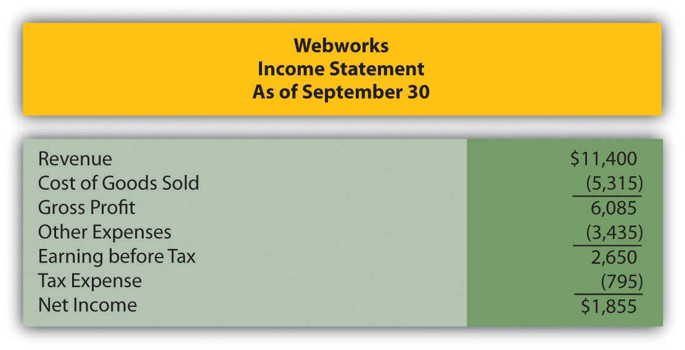
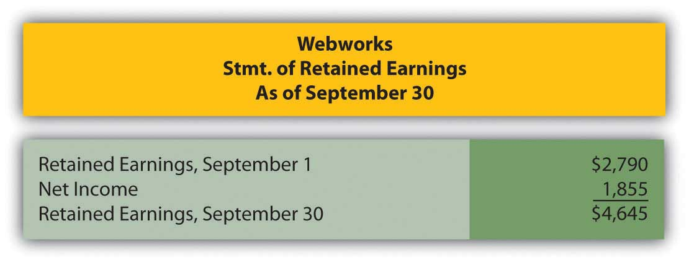
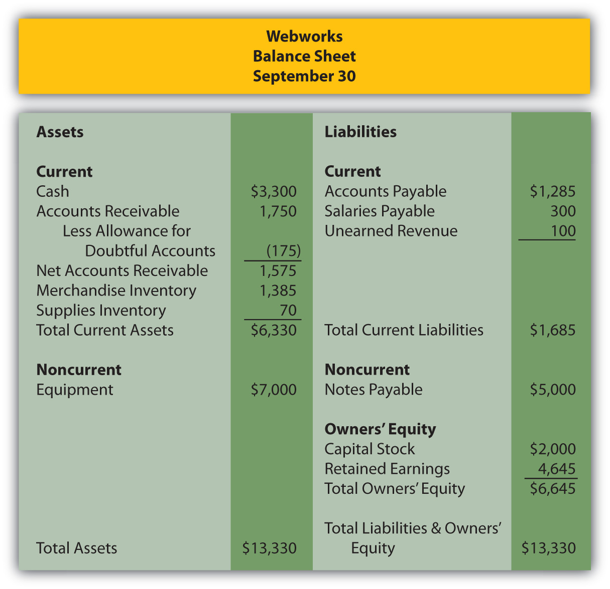

On January 1, the Rhode Island Redbirds organization purchased new workout equipment for its athletes. The equipment had a cost of $15,600, transportation costs of $450, and set up costs of $290. The Redbirds spent $350 training their trainers and athletes on its proper use. The useful life of the equipment is five years and has no residual value. How much depreciation expense should the Redbirds take in the first year, if straight-line is being used?
See the information in number 1 above. Assume the Redbirds decide to use the double-declining balance depreciation method instead. What would Year 1 depreciation expense be?
Kite Corporation wishes to trade equipment it owns for a vehicle owned by the Runner Corporation. Kite’s equipment has a book value of $4,000 and a fair value of $4,500. Runner’s vehicle has a book value and fair value of $5,100. Kite agrees to pay Runner $600 in cash in addition to giving up the equipment. What would be Kite’s gain or loss on this exchange?
At the beginning of the year, the Kelvin Company owned equipment that appeared on its balance sheet as such:
| Equipment | $7,000,000 |
| Accumulated Depreciation | ($2,000,000) |
The equipment was purchased two years ago and assigned a useful life of six years and a salvage value of $1,000,000. During the first month of the year, Kelvin made modifications to the equipment that increased its remaining useful life from four years to five years. Its salvage value remained unchanged. The cost of these modifications was $50,000. What would be the balance in the accumulated depreciation account of this equipment on 12/31 of that year?
On January 3, 20X1, Jewels Inc. purchases a South American mine found to be rich in amethyst for $560,000. Once all the amethyst has been removed, the land is estimated to be worth only $100,000. Experts predict that the mine contains 4,000 pounds of amethyst. Jewels plans on completing the extraction process in four years. No amethyst was extracted during 20X1. What would accumulated depletion be on 12/31/X1?
Maxwell Corporation wishes to sell a building it has owned for five years. It was purchased for $430,000. Maxwell performed additional modifications to the building, which totaled $45,000. On the proposed date of sale, the accumulated depreciation on the building totaled $75,000. The proposed sales price of the building is $380,000. Maxwell is trying to determine the income statement effect of this transaction. What would be Maxwell’s gain or loss on this sale?
Springfield Corporation purchases a new machine on March 3, 20X4 for $35,600 in cash. It pays an additional $3,400 to transport and set up the machine. Springfield’s accountant determines that the equipment has no residual value and that the useful life is five years. It is expected to generate 2,400,000 units during its life. Assume Springfield employs the half-year convention.
Gameplay Company operates in mall locations and sells videogame equipment and games. The company purchased furniture and fixtures to use in one of its stores for $440,000 in January of 20X5. The furniture and fixtures were being depreciated using the straight-line method over ten years with a residual value of $10,000. In December 20X9, Gameplay decided to close the location and entered into an exchange agreement with Allero Corporation. Allero agreed to give Gameplay vehicles with a fair value of $200,000 and cash of $50,000 in exchange for the furniture and fixtures from this store. The furniture and fixtures have an estimated fair value of $250,000 on the date of exchange.
Fairfield Inc. invested in a plant to manufacture j phones, thinking these would be the next “big thing” and compete with the current maker of the iPhone. Unfortunately, things did not work out so well for the j phone. Complete the following steps to determine if Fairfield will need to record an impairment loss in the current period.
Janus Corporation was unable to find a store suitable for its business, so it decided to build one. It was able to secure debt financing from the Southeast Bank in the amount of $4,000,000 at an interest rate of 5 percent. During 20X8, Janus spent $2,500,000 on construction, but did not complete the building. Janus continued work on the building into 20X9, eventually completing it on July 1 at a total cost of $3,800,000. Janus does not use the half-year convention.
Markov Corporation owns forests that are harvested and sold to papermaking companies. Markov purchases a new tract of forest on January 1, 20X6, for $360,000. Its experts estimate that 4,000 tons of wood can be harvested from the forest and sold. After that, the land will be worth about $20,000 (of course, Markov could replant trees, changing this value, but for ease of calculations, we’ll assume no replanting).
On April 1, 20X1, Chang and Chang Inc. invested in a new machine to manufacture soccer balls. The machine is expected to manufacture 1,400,000 balls over its life of three years and then it will be scrapped. The machine cost $50,000 including normal and necessary costs of setting it up. Chang will use units-of-production to depreciate the machine.
On June 30, Partyplace, a popular spot for receptions and other events, purchased a used limousine and used Hummer from a car dealership as a basket purchase. They received a good deal because they bought the vehicles together, paying only $75,000 for both. The market values were $45,000 for the limo and $40,000 for the Hummer.
This problem will carry through several chapters, building in difficulty. It allows students to continuously practice skills and knowledge learned in previous chapters.
In Chapter 9 "Why Does a Company Need a Cost Flow Assumption in Reporting Inventory?", you prepared Webworks statements for September. They are included here as a starting point for October.
Here are Webworks financial statements as of September 30.
Figure 10.20
Figure 10.21
Figure 10.22
The following events occur during October:
a. Webworks purchases supplies worth $100 on account.
b. Webworks paid $600 in rent for October, November, and December.
c. At the beginning of October, Webworks had nine keyboards costing $105 each and forty flash drives costing $11 each. Webworks uses periodic FIFO to cost its inventory.
d. On account, Webworks purchases fifty keyboards for $110 each and 100 flash drives for $12 each.
e. Webworks starts and completes seven more Web sites and bills clients for $3,900.
f. Webworks pays Nancy $700 for her work during the first three weeks of October.
g. Webworks sells 50 keyboards for $7,500 and 100 flash drives for $2,200 cash.
h. The Web site paid for in August and started in September was completed. The client had originally paid $100 in advance.
i. Webworks paid off the remainder of its note payable.
j. Webworks collects $4,000 in accounts receivable.
k. Webworks pays off its salaries payable from October.
l. Webworks pays off $6,000 of its accounts payable.
m. One Web site client is dissatisfied with the work done and refuses to pay his bill. Rather than incur the expense of taking the client to court, Webworks writes off the account in the amount of $200.
n. Webworks pays Leon a salary of $2,000.
o. Webworks purchased office furniture on account for $1,000, including transportation and setup.
p. Webworks pays taxes of $868 in cash.
Required:
A. Prepare journal entries for the above events.
B. Post the journal entries to T-accounts.
C. Prepare an unadjusted trial balance for Webworks for October.
D. Prepare adjusting entries for the following and post them to your T-accounts.
q. Webworks owes Nancy $100 for her work during the last week of October.
r. Leon’s parents let him know that Webworks owes $300 toward the electricity bill. Webworks will pay them in November.
s. Webworks determines that it has $50 worth of supplies remaining at the end of October.
t. Prepaid rent should be adjusted for October’s portion.
u. Webworks is continuing to accrue bad debts at 10 percent of accounts receivable.
v. A CPA tells Leon that Webworks should be depreciating its equipment and furniture. The CPA recommends that Webworks use the straight-line method with a four-year life for the equipment and a five-year life for the furniture. Normally, when an error is made, such as not depreciating equipment, the company must go back and restate prior financial statements correctly. Since Webworks is only generating these monthly statements for internal information, the CPA recommends that Leon just “catch up” the prior month’s depreciation on the equipment this month. So when Webworks records October’s equipment depreciation, it will also record the deprecation that should have been taken in July, August and September. The depreciation on the furniture should just be for one month. Round to the nearest whole number.
w. Record cost of goods sold.
E. Prepare an adjusted trial balance.
F. Prepare financial statements for October.